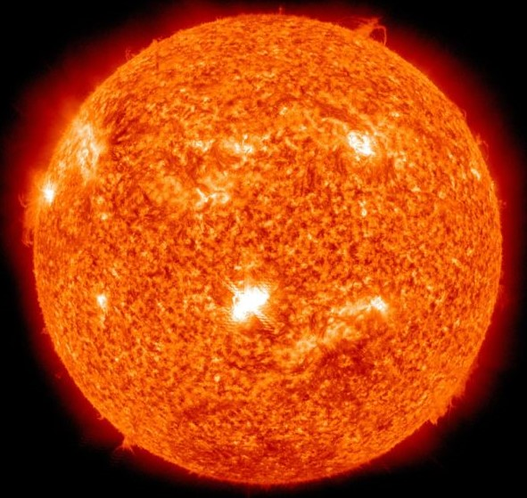

The big bang is how astronomers explain the way the universe began. It is the idea that the universe began as just a single point, then expanded and stretched to grow as large as it is right now—and it is still stretching!
| Link no. | Description |
|---|---|
| 1 | NASA Space Place |

Formation
How did the Solar System form?
Facts about the Solar System
- Our solar system is made up of a star, eight planets, and countless smaller bodies such as dwarf planets, asteroids, and comets.
- Our solar system orbits the center of the Milky Way galaxy at about 515,000 mph (828,000 kph). We’re in one of the galaxy’s four spiral arms.
- It takes our solar system about 230 million years to complete one orbit around the galactic center.
- Our solar system is a region of space. It has no atmosphere. But it contains many worlds – including Earth – with many kinds of atmospheres.
- The planets of our solar system – and even some asteroids – hold more than 200 moons in their orbits.
- The four giant planets – and at least one asteroid – have rings. None are as spectacular as Saturn’s gorgeous rings.
- More than 300 robotic spacecraft have explored destinations beyond Earth's orbit, including 24 American astronauts who made the trip from the Earth to the Moon.
- Our solar system is the only one known to support life. So far, we only know of life on Earth, but we’re looking for more everywhere we can.
- NASA’s Voyager 1 and Voyager 2 are the only spacecraft to leave our solar system. Three other spacecraft – Pioneer 10, Pioneer 11, and New Horizons – will eventually hit interstellar space.
| Link no. | Description |
|---|---|
| 1 | Overview |
| 2 | In Depth |
| 3 | Exploration |
- The Sun 
- The Sun is about 100 times wider than Earth and about 10 times wider than Jupiter, the biggest planet. If the Sun were as tall as a typical front door, Earth would be about the size of a nickel.
- The Sun is the only star in our solar system. It is the center of our solar system, and its gravity holds the solar system together. Everything in our solar system revolves around it – the planets, asteroids, comets, and tiny bits of space debris.
- Measuring a “day” on the Sun is complicated because of the way it rotates. It doesn't spin as a single, solid ball. This is because the Sun’s surface isn't solid like Earth's. Instead, the Sun is made of super-hot, electrically charged gas called plasma. This plasma rotates at different speeds on different parts of the Sun. At its equator, the Sun completes one rotation in 25 Earth days. At its poles, the Sun rotates once on its axis every 36 Earth days.
- The part of the Sun we see from Earth – the part we call the surface – is the photosphere. The Sun doesn't actually have a solid surface because it’s a ball of plasma.
- Above the Sun’s surface are its thin chromosphere and the huge corona (crown). This is where we see features such as solar prominences, flares, and coronal mass ejections. The latter two are giant explosions of energy and particles that can reach Earth.
- The Sun doesn't have moons, but it’s orbited by eight planets, at least five dwarf planets, tens of thousands of asteroids, and perhaps three trillion comets and icy bodies.
- Several spacecraft are currently investigating the Sun including Parker Solar Probe, STEREO, Solar Orbiter, SOHO, Solar Dynamics Observatory, Hinode, IRIS, and Wind.
- The Sun would have been surrounded by a disk of gas and dust early in its history when the solar system was first forming 4.6 billion years ago. Some of that dust is still around today, in several dust rings that circle the Sun. They trace the orbits of planets, whose gravity tugs dust into place around the Sun.
- Nothing could live on the Sun, but its energy is vital for most life on Earth.
- The temperature in the Sun's core is about 27 million degrees Fahrenheit (15 million degrees Celsius) – hot enough to sustain nuclear fusion. This creates outward pressure that supports the star's gigantic mass, keeping it from collapsing.
- Mercury
 Mercury is a terrestrial planet. Mercury—the smallest planet in our solar system and closest to the Sun—is only slightly larger than Earth's Moon. Mercury is the fastest planet, zipping around the Sun every 88 Earth days. Mercury doesn't have any moons. It is 60 million km far from the Sun. It is named after the Roman God of speed. Sunlight takes 3 minutes to reach Mercury. Mercury is 4878.8 km in diameter. To know more about Mercury, Click Here.
Mercury is a terrestrial planet. Mercury—the smallest planet in our solar system and closest to the Sun—is only slightly larger than Earth's Moon. Mercury is the fastest planet, zipping around the Sun every 88 Earth days. Mercury doesn't have any moons. It is 60 million km far from the Sun. It is named after the Roman God of speed. Sunlight takes 3 minutes to reach Mercury. Mercury is 4878.8 km in diameter. To know more about Mercury, Click Here. Earth is a terrestrial planet. Earth—our home planet—is the only place we know of so far that’s inhabited by living things. It's also the only planet in our solar system with liquid water on the surface. It has 1 moon. Earth is 150 million km far from the Sun. 1 year of Earth is equal to 365.25 days. Sunlight takes 8 minutes to reach Earth. Earth is 12756.2 km in diameter. To know more about Earth, Click Here.
Earth is a terrestrial planet. Earth—our home planet—is the only place we know of so far that’s inhabited by living things. It's also the only planet in our solar system with liquid water on the surface. It has 1 moon. Earth is 150 million km far from the Sun. 1 year of Earth is equal to 365.25 days. Sunlight takes 8 minutes to reach Earth. Earth is 12756.2 km in diameter. To know more about Earth, Click Here.
 Earth's Moon is the only place beyond Earth where humans have set foot, so far. The Moon makes our planet more livable by moderating how much it wobbles on its axis. 1 year on the Moon is equal to 27 Earth days. The Moon is 3476.2 km in diameter. The Moon is 384000 km far from the Earth. 24 humans, 12 moonwalkers and more than 100 robots have visited the moon. To know more about the Moon, Click Here.
Earth's Moon is the only place beyond Earth where humans have set foot, so far. The Moon makes our planet more livable by moderating how much it wobbles on its axis. 1 year on the Moon is equal to 27 Earth days. The Moon is 3476.2 km in diameter. The Moon is 384000 km far from the Earth. 24 humans, 12 moonwalkers and more than 100 robots have visited the moon. To know more about the Moon, Click Here. Mars is a terrestrial planet. Mars is a dusty, cold, desert world with a very thin atmosphere. There is strong evidence Mars was—billions of years ago—wetter and warmer, with a thicker atmosphere. Mars has 2 moons: Phobos and Deimos. Mars is 225 million kilometers far from the Sun. 1 year of Mars is equal to 687 Earth years. Sunlight takes 12 minutes to reach Mars. Mars is named after the Roman God of war. Mars is 6792.4 km in diameter. To know more about Mars, Click Here or Here.
Mars is a terrestrial planet. Mars is a dusty, cold, desert world with a very thin atmosphere. There is strong evidence Mars was—billions of years ago—wetter and warmer, with a thicker atmosphere. Mars has 2 moons: Phobos and Deimos. Mars is 225 million kilometers far from the Sun. 1 year of Mars is equal to 687 Earth years. Sunlight takes 12 minutes to reach Mars. Mars is named after the Roman God of war. Mars is 6792.4 km in diameter. To know more about Mars, Click Here or Here.
 Deimos—the smaller Martian moon—whips around Mars every 30 hours. Deimos is a dark body that appears to be composed of materials similar asteroids found in the outer asteroid belt. 1 year of Deimos is equal to 1.26 Earth days. Deimos is named after the Greek God of dread. Deimos is 17.4 km in diameter. To know more about Deimos, Click Here.
Deimos—the smaller Martian moon—whips around Mars every 30 hours. Deimos is a dark body that appears to be composed of materials similar asteroids found in the outer asteroid belt. 1 year of Deimos is equal to 1.26 Earth days. Deimos is named after the Greek God of dread. Deimos is 17.4 km in diameter. To know more about Deimos, Click Here. Io is the most volcanically active world in the solar system, with hundreds of volcanoes, some erupting lava fountains dozens of miles high. Io is caught in a tug-of-war between Jupiter and neighboring moons. Io is named after the woman who was changed into a cow by the Roman Gods. Io is 421700 km far from Jupiter and 628.3 million km far from Earth. Light takes 33 minutes to reach Io from Earth. Io was discovered on January 8, 1610. Io is 3642.6 km in diameter. To know more about Io, Click Here.
Io is the most volcanically active world in the solar system, with hundreds of volcanoes, some erupting lava fountains dozens of miles high. Io is caught in a tug-of-war between Jupiter and neighboring moons. Io is named after the woman who was changed into a cow by the Roman Gods. Io is 421700 km far from Jupiter and 628.3 million km far from Earth. Light takes 33 minutes to reach Io from Earth. Io was discovered on January 8, 1610. Io is 3642.6 km in diameter. To know more about Io, Click Here.
 Europa is perhaps the most promising place to look for present-day environments suitable for life. Europa is thought to have an ocean of salty water below its frozen outer shell of ice. Europa is named after the woman abducted by Greek God Zeus. Europa is 670900 km far from Jupiter and 628.3 million km far from Earth. Light takes 33 minutes to reach Europa from Earth. Europa was discovered on 8th January 1610. Europa is 3138 km in diameter. To know more about Europa, Click Here.
Europa is perhaps the most promising place to look for present-day environments suitable for life. Europa is thought to have an ocean of salty water below its frozen outer shell of ice. Europa is named after the woman abducted by Greek God Zeus. Europa is 670900 km far from Jupiter and 628.3 million km far from Earth. Light takes 33 minutes to reach Europa from Earth. Europa was discovered on 8th January 1610. Europa is 3138 km in diameter. To know more about Europa, Click Here.
 Ganymede is the largest moon in our solar system and the only moon known to create its own magnetic field. Scientists have also found strong evidence of an underground ocean on Ganymede. Ganymede is named after the cupbearer to the Greek Gods. Ganymede is 1070000 km far from Jupiter and 628.3 million km far from Earth. Light takes 33 minutes to reach Ganymede from Earth. Ganymede was discovered on 7th January 1610. Ganymede is 5268.2 in diameter. To know more about Ganymede, Click Here.
Ganymede is the largest moon in our solar system and the only moon known to create its own magnetic field. Scientists have also found strong evidence of an underground ocean on Ganymede. Ganymede is named after the cupbearer to the Greek Gods. Ganymede is 1070000 km far from Jupiter and 628.3 million km far from Earth. Light takes 33 minutes to reach Ganymede from Earth. Ganymede was discovered on 7th January 1610. Ganymede is 5268.2 in diameter. To know more about Ganymede, Click Here.
 Saturn is a Gas Giant. Adorned with a dazzling, complex system of icy rings, Saturn is unique in our solar system. The other giant planets have rings, but none are as spectacular as Saturn's. Saturn has 62 moons. Saturn is 1425 million km far from the Sun. 1 year of Saturn is equal to 10759 Earth days. Sunlight takes 82 minutes to reach Saturn. Saturn is named after the father of Jupiter. Saturn is 120536 km in diameter. To know more about Saturn, Click Here.
Saturn is a Gas Giant. Adorned with a dazzling, complex system of icy rings, Saturn is unique in our solar system. The other giant planets have rings, but none are as spectacular as Saturn's. Saturn has 62 moons. Saturn is 1425 million km far from the Sun. 1 year of Saturn is equal to 10759 Earth days. Sunlight takes 82 minutes to reach Saturn. Saturn is named after the father of Jupiter. Saturn is 120536 km in diameter. To know more about Saturn, Click Here.